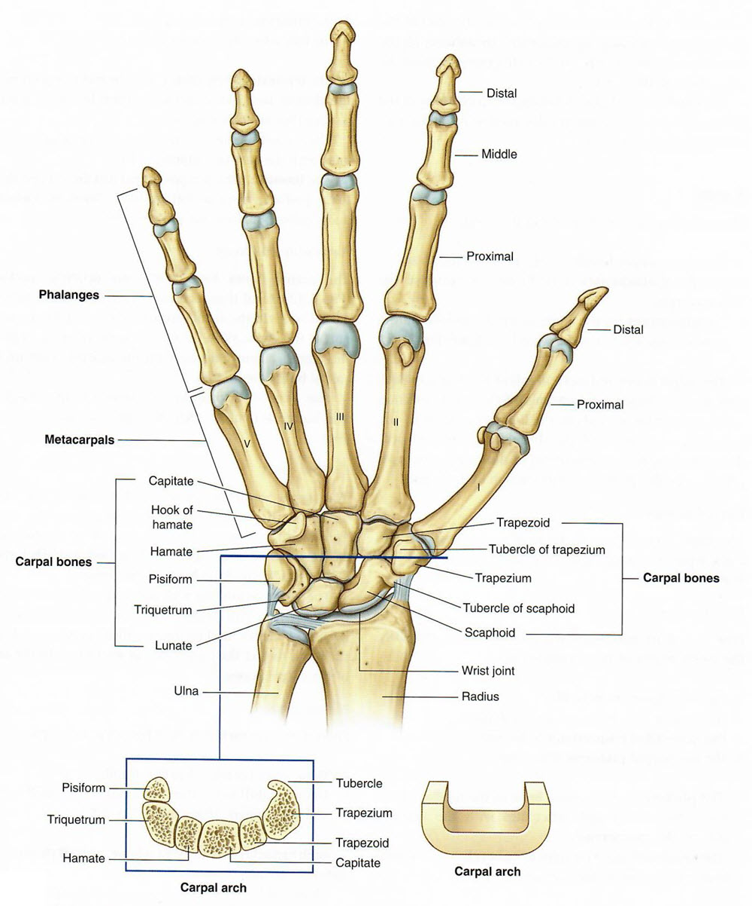

Lab 4 - Module 2 - The Hand: Page 2 of 12
Bones of the Wrist - The Carpus
×

|  |
| Tap on image to enlarge |
| Begin with the Radius and Ulna. |
| Add the Scaphoid. |
| Add the Lunate. |
| Add the Triquetrium. |
| Add the Pisiform. |
| Add the Trapezium. |
| Add the Trapazoid. |
| Add the Capitate. |
| Add the Hamate. |
| The carpus has and anterior concavity known as the carpal groove, which is converted into an osseofibrous carpal tunnel by the flexor retinaculum (attached to the scaphoid and trapezium bones laterally and to the pisiform and hook of the hamate medially). The carpal tunnel is completely filled with tendons and the median nerve. Compression of the median nerve in the carpal tunnel produces carpal tunnel syndrome. |